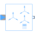

SymmetricalComponentsCreates symmetrical components from signals representing quasi-static phasors |

|
Information
This information is part of the Modelica Standard Library maintained by the Modelica Association.
Calculates the symmetric components according to Charles L. Fortescue from the time phasors.
See also
User's guide on symmetrical components and orientation.
Parameters (3)
| n |
Value: m Type: Integer Description: Number of inputs (= number of outputs) |
|---|---|
| useConjugateInput |
Value: fill(false, m) Type: Boolean[n] Description: If true, inputs are processed conjugate complex |
| m |
Value: 3 Type: Integer Description: Number of phases |
Outputs (4)
| abs_u |
Default Value: abs(u) Type: Real[m] Description: Absolute of input |
|---|---|
| arg_u |
Default Value: arg(u) Type: Angle[m] (rad) Description: Argument of input |
| abs_y |
Default Value: abs(y) Type: Real[m] Description: Absolute of output |
| arg_y |
Default Value: arg(y) Type: Angle[m] (rad) Description: Argument of output |
Connectors (2)
| u |
Type: ComplexInput[n] Description: Connector of Complex input signals |
|
|---|---|---|
| y |
Type: ComplexOutput[n] Description: Connector of Complex output signals |
Components (2)
| uInternal |
Type: Complex[n] Description: Equals either u or conjugate complex input u if useComplexInput = true |
|
|---|---|---|
| sTM |
Type: Complex[m,m] |
Used in Examples (2)
|
Modelica.Electrical.QuasiStatic.Machines.Examples Transformer test bench |
|
|
Modelica.Electrical.QuasiStatic.Polyphase.Examples Unsymmetrical three-phase load |